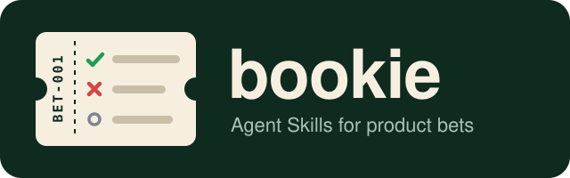

Bookie: Product Bets for Agents
Set the no-go criteria before your agent writes line one.
Bookie runs each product idea as a bet in Claude Code or another coding agent: fixed terms, a thin build, real users, and a go, no-go, or pivot call on a date you pick first.
Then type two commands in your agent. Read the source on GitHub
The register at the root of your repo Bookie writes it after each stage
| Bet | Name | Status | Stage | Decision date | Criteria | Updated |
|---|---|---|---|---|---|---|
| ❌ BET-001 | Invoice match | Decided: no-go | 🏁 finished | 2026-09-30 | 1 met, 3 not met | 2026-09-30 |
| 🧪 BET-002 | Weekly cash report | With users | 🔁 iterate (9 of 11) | 2026-12-04 | 2 met, 2 open | 2026-11-16 |
| 📝 BET-003 | Supplier risk alerts | Framing | 📝 frame (2 of 11) | none | 2026-11-17 |
BOOKIE.md after three bets. How to read it🤔 The problem
Your agent builds fast. Who decides if it should?
Claude Code can scaffold a FastAPI backend, a React UI, auth, and tests in an afternoon. Then you spend a month on polish for a demo that nobody asked for.
You know the pattern. The demo works. Three friends say "nice". One person will "probably pay". So you move the decision date by two weeks, then again.
Bookie is the friend who wrote the date down. 🎲
🎲 How a bet works
The terms come first, and they do not move.
A bookie writes the terms down before the game and pays out on the final score. Bookie does that for a product idea.
Terms first
Before the first line of code, you write a core question, 3 to 6 no-go criteria, and a decision date. Each criterion has a number and names its evidence.
Terms stay put
After the frame stage, no agent changes a criterion, a threshold, or the date. Only you can, and the record shows the change.
Only acts count
The Customer evidence table logs only what a person did: a second login, a payment, a cancellation. A compliment goes nowhere.
Settled on the date
At the score stage, the agent runs the evidence commands again and marks each criterion met or not met. You write the memo and make the call.
A no-go on the decision date costs you two to four weeks of build. You get those weeks back on the next idea.
📒 The register
Every bet in one table.
The ticket at the top of this page is BOOKIE.md, the register at the root of your repo. Bookie writes it again after each stage. This page adds emoji to show the state of each bet.
How to read it
- BET-001 ran to its date and missed 3 of 4 criteria. It stays in the table, so the next idea starts with a record of what failed.
- BET-002 has real users and is in its weekly fix loop, with 2 criteria met and 2 still open.
- BET-003 is still at the frame stage. Its agent writes no code until you confirm the criteria and the date.
How it works
- Agents read it first.
AGENTS.mdtells each agent to check the register before a task. When the bet is not at the build stage, the agent stops and asks you to type/bookie BET-NNN. - Bookie writes it. The script owns the file, so an edit by hand is replaced at the next stage.
- Private when you want. Keep the bet record out of git, and
BOOKIE.mdstays out of git too.
🗺️ Eleven stages
One gate each.
The Stage column of the register shows where each bet is in these eleven stages. Each stage must pass its gate before the next one starts.
- 1🏗️ setupWrites AGENTS.md, CLAUDE.md, PRODUCTS.md, DESIGN.md, and the register.
- 2📝 frameCore question, no-go criteria, and decision date. You confirm them.
- 3🛒 build-or-buyAt most one hour to find what already solves the problem.
- 4🎯 scope20 to 50 real examples and one success metric.
- 5🧪 evalsAn eval set with yes/no checks and a judge rubric.
- 6🔨 buildThe thin slice, built with /poteto-mode and run against the evals.
- 7🛡️ hardenThe checks to make before real users see it.
- 8👥 usersReal users, and a log of what they did.
- 9🔁 iterateEach week, turn failures into eval cases and fix the top one.
- 10⚖️ scoreEach criterion marked met or not met from fresh evidence.
- 11🏁 memoGo, no-go, or pivot, in writing.
You confirm the terms at frame, and you make the call at score and memo. Stop at any stage: /bookie BET-001 continues where you stopped, with your answers saved.
🧑💻 Built for developers
It works the way your repo already works.
Your stack, ready
Pick FastAPI and React at setup, and Bookie writes the commands for both parts into AGENTS.md and the layout into DESIGN.md. Python, TypeScript, and other stacks work too.
One commit per stage
Each stage lands as one commit on the branch bet/bet-nnn. Review it or revert it like any commit. Secrets stay out, and nothing is pushed.
Evals before the build
You collect 20 to 50 real examples and turn them into an eval set before the thin slice exists.
Builds with poteto-mode
The build stage hands each unit to /poteto-mode from pstack. Each verified unit goes to the build log.
You make the product calls
The criteria, the date, the scope, the first users, and the decision come to you as questions in the agent.
Files in your repo
The skills are Markdown and Python standard-library scripts. There is no account to create and no server to run.
🚀 Install
Start your first bet.
You need Node.js for npx, git, and Python 3.11 or later.
- Install the skills from the root of your project. Select all five skills, then your agents.
$ npx skills add niccolox/devekko.bookie
- Set up the project. Start your agent and type the command. It adds pstack when it is missing, writes the project files, and makes one commit.
> /setup-bookie
- Start the first bet. Bookie asks for one paragraph about the problem, then runs the stages in order.
> /bookie
Update later with npx skills update.
🧩 The five skills
Each one starts from its slash command.
- /setup-bookie
- Sets up a project in one pass: pstack, model settings, project files, .gitignore, and a commit.
- /bookie
- Runs one bet from setup to the memo.
- /bet-record
- Keeps the bet record: core question, no-go criteria, decision date, build log, score, and memo.
- /bet-diligence
- Writes a diligence memo on a dependency, product, or company, with evidence for each finding.
- /bet-discovery
- Plans customer interviews and logs only what people did.
❓ Questions
Before you install.
Which agents does it work with?
Bookie is built and tested with Claude Code. The skills use the Agent Skills format, so the skills CLI can install them for other agents too. Each bet skill starts only from a slash command that you type.
What does it change in my repo?
/setup-bookie writes AGENTS.md, CLAUDE.md, PRODUCTS.md, DESIGN.md, .gitignore, and BOOKIE.md, then makes one commit on the branch setup/bookie. A file that exists keeps its text and gets only its missing lines. Nothing is pushed.
Do I need an account or an API key?
Not for Bookie. The skills run inside the agent that you already use. The scripts need only Python 3.11 or later and its standard library.
Can I use it on a project that already exists?
Yes. Bookie adds only what is missing. For a bet that started before Bookie, it marks the finished stages done with the evidence that exists, and it does not repeat finished work.
Can I score a bet before its decision date?
Yes, with a written reason. No agent can move the date or change a no-go criterion after the frame stage. Only you can, and the record shows the change.
What does a no-go cost me?
The weeks up to the decision date, which you set 2 to 4 weeks after the build starts. The bet stays in the register, so your next idea starts with a record of what failed.
🏁 Your next idea
Write the terms first. Then let your agent build.
Three commands from install to your first bet. Bookie asks for one paragraph about the problem, then runs the stages in order.